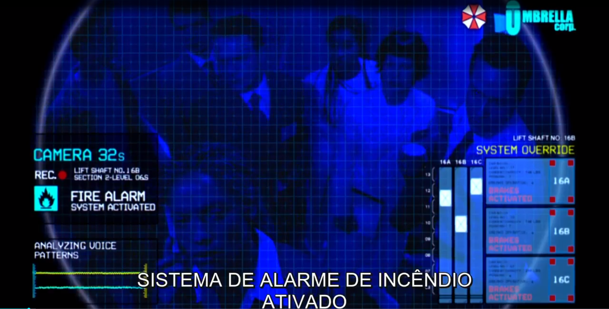

Agora temos dois planos em plongéeplano em que a câmera olha para o objeto de cima para baixo demonstrando a fragilidade dos funcionários, o quão incapazes eles são de se manter vivos. Isso, alguns segundos antes de eles “morrerem”.

Nesse momento a energia do laboratório é cortada e um elevador despenca matando todos que estavam dentro (guarde essa informação).